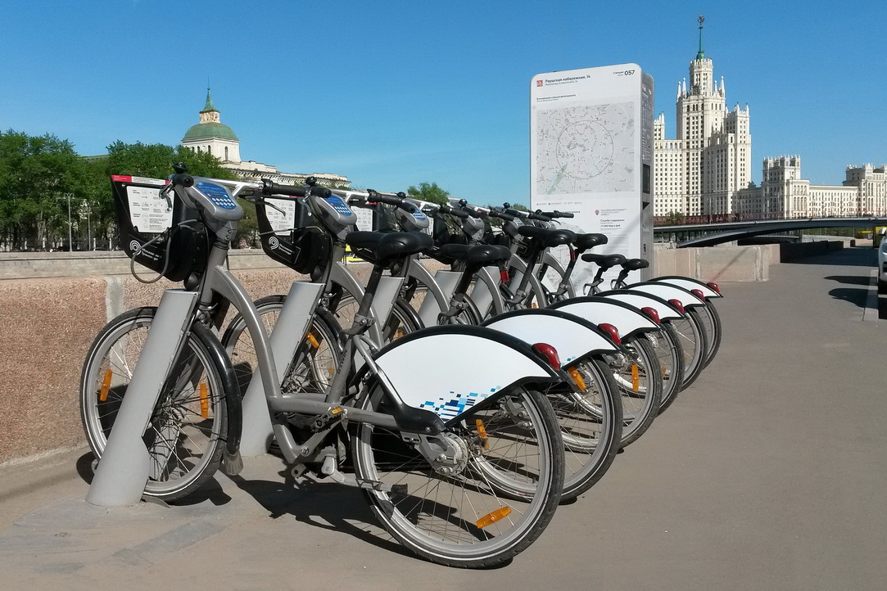

Projects
Olist E-commerce Analysis
SQL and Power BI project analyzing sales performance, customer behavior, and key delivery metrics
View ProjectBank Marketing Prediction
Python project with data cleaning, exploratory analysis, and classification models for campaign response
View Project
Seattle Airbnb Market
SQL and Power BI used to explore pricing trends, room types, and seasonal availability in Seattle
View Project
Retail Sales Dashboard
Excel dashboard with pivot tables, KPIs, slicers, and sales analysis by location and category
View ProjectDiabetes Prediction
Python project including EDA, data preprocessing, and classification models for health outcome prediction
View Project

Cyclistic Analysis
R and Tableau used for data wrangling and visualization to analyze rider behavior and trip patterns
View Project